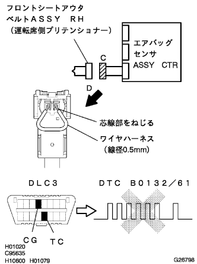
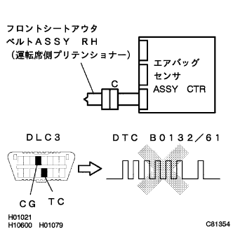

DTC B0132/61 フロントプリテンショナーRH点火回路(アース短絡) |
| DTC No. | DTC検出項目 | 問題発生箇所 |
|---|---|---|
| B0132/61 |
|
|
 参照)参照)
参照)参照)| 手順1 | フロントプリテンショナーRH点火回路点検（エアバッグセンサASSY CTR-フロントシートアウタベルトASSY RH間） |
 |
バッテリーのマイナスターミナルを切り離し、90秒間待機する。
エアバッグセンサASSY CTRおよびフロントプリテンショナーRHからコネクタを切り離す。
SST(トヨタエレクトリカルテスター)を使用して、コネクタCのPR+、PR-端子-ボデーアース間の抵抗値を点検する。
|
| ||||
| OK | |
| 手順2 | エアバッグ センサASSY点検 |
|  |
エアバッグセンサASSY CTRにコネクタを接続する。
ワイヤハーネス(線径0.5ｍｍ)を使用して、コネクタCのPR+、PR-端子間を短絡する。
バッテリーのマイナスターミナルを接続し、IGスイッチをONにして60秒間待機する。
SSTを使用してダイアグコードを消去後、再度ダイアグコードを点検する。
ウォーニングランプによるコード読み取りの場合
TaSCANによるコード読み取りの場合
|
| ||||
| OK | |
| 手順3 | フロントプリテンショナーRH点火系点検 |
|  |
IGスイッチをOFF(LOCK)にする。
バッテリーのマイナスターミナルを切り離し、90秒間待機する。
コネクタCのPR+、PR-端子間の短絡を解除し、フロントプリテンショナーRHにコネクタを接続する。
バッテリーのマイナスターミナルを接続し、IGスイッチをONにして60秒間待機する。
SSTを使用してダイアグコードを消去後、再度ダイアグコードを点検する。
ウォーニングランプによるコード読み取りの場合
TaSCANによるコード読み取りの場合
|
| ||||
| OK | ||
| ||